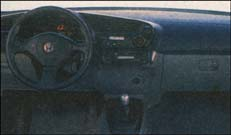

TOYOTA E-COM Making a Volkswagen Bug look like a behemoth, Toyota's experimental E-Com is a two-seat electric vehicle designed for use on college campuses and in planned residential developments. Though perfectly street legal, its 60 mile range (short even by liberal industry standards) relegates the E-Com to jaunts to the store and back.